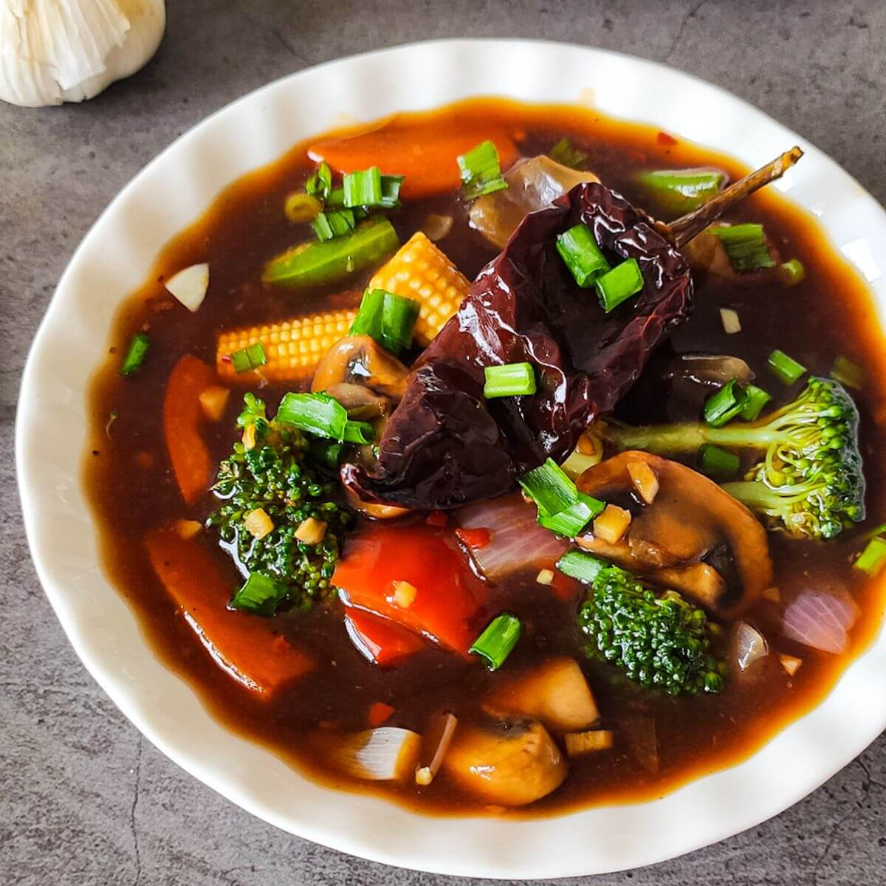

Chinese Veggies Gravy

Description: Delicious mixed vegetable gravy with Chinese flavors.
Category: Veg
Cuisine: Chinese
Meal Type: Lunch
Cooking Time: 35 mins
Servings: 3
Difficulty: Medium
Ingredients
- Carrot
- Beans
- Capsicum
- Soy sauce
- Corn flour
Cooking Steps
- Chop vegetables
- Stir fry vegetables
- Add sauces and spices
- Mix corn flour slurry
- Cook until thick gravy forms